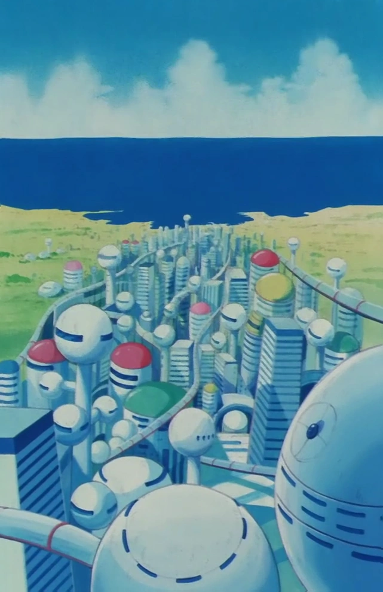
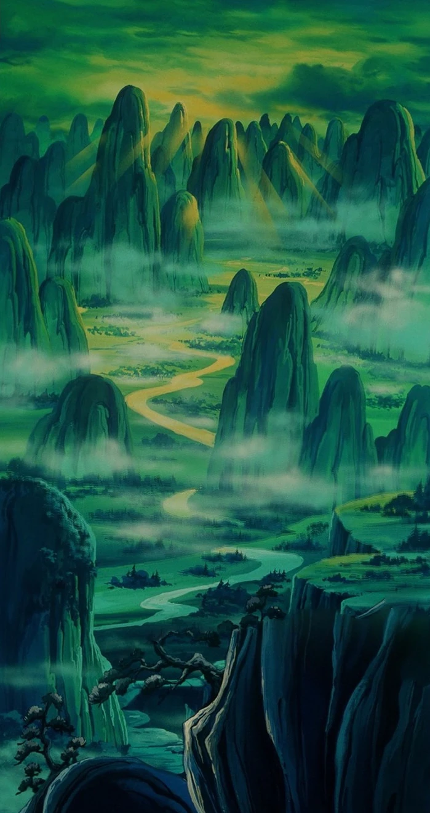
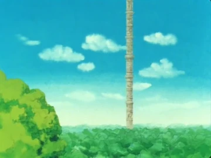
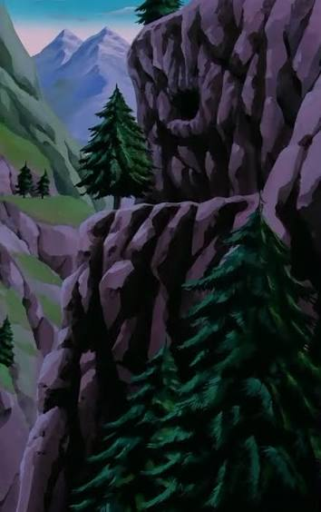
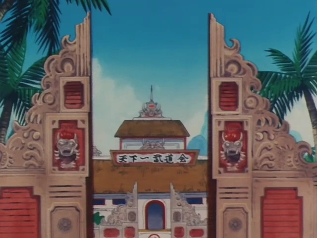

Entretenimento e Lazer
Nós trazemos para vocês as melhores localizações para você visitar durante as férias ou no final de semana.

CAPITAL DO OESTEEssa cidade dispensa apresentações, um polo industrial e do entretenimento, com a trilionária Corporação Cápsula responsável por todo tipo de inovação tecnológica, ela inovou e transformou esta cidade na "cidade do futuro". Ela conta com diversas atrações para as crianças, com parques temáticos, praias límpidas e calmas e atrações que mudam toda semana. E é claro que para os adultos também não falta, restaurantes, parques e alamedas para compras. A sede da Corporação Cápsula também é localizada lá, então se quiser dar uma passadinha por lá, seus passeios programados são uma ótima pedida, além de diversas vagas de emprego que surgem a cada dia. Se você, de algum jeito, se cansar da cidade, seus arredores não deixam a desejar, com hotéis, passeios ao ar livre e tudo que a vida próxima dessa Megalópole pode oferecer!

ÁREAS MONTANHOSAS DO SUDESTEEsse destino é para aqueles que gostam de explorar e se aventurar, pois essa região é fantástica, seus montes cheios de vida, vida selvagem que floresce sem parar e o pilar das artes marciais. Dizem que aqui é onde diversos lutadores dos Torneios de Artes Marciais começaram sua jornada, enfretando os diversos perigos que essas regiões trazem, aprendendo com suas experiências e se tornando um guerreiro capaz de vencer a todos. Há quem diga que foi aqui que se encontra uma das lendárias Esferas do Dragão, item mítico que, se juntada com outras 6, pode conceder um desejo especial ao lendário Shenlong, o qual Gyozura diz ter avistado há muitos anos atrás.

TERRAS SAGRADAS DE KARINSim, você não está vendo errado, esta estrutura enorme é uma torre, não sabemos sua real altura, já que nunca conseguimos subir, mas ela sobe até além das nuvens! A floresta que a cerca é muito pacífica, com seus moradores sendo uma tribo indígena que mora ao redor desta torre. Eles são muito amigáveis e inteligentes, ouvimos suas histórias e seus encontros com a criança com o rabo de macaco, além também da existência de uma organização maligna que esse menino desmantelou sozinho. Eles também carregam uma Esfera do Dragão consigo, dizem que ela sempre volta lá, por conta da energia "divina" que aquele local transmite, o repórter que foi até lá disse que tem realmente tem algo de diferente por lá.

DARLING POLYNYAPara os amantes do frio, aqui é o lugar ideal para viajar, com montanhas carregadas de neve, lobos e alces andando por aí e uma pequena vila pesqueira, pequena e simpática. A paisagem gélida com certeza impressiona, não tem muitas atividades para fazer por lá, mas com certeza é um lugar belíssimo para passar as férias de final de ano nos chalés quentinhos que estão instalados lá. Só tenha cuidado com a vida selvagem, principalmente os dinossauros que andam por lá.

OUTRAS LOCALIDADESEsse tópico serve para que falemos de localidades que são trufas a serem encontradas no mundo.
- Vila Lacco: Uma pequena vila no sudeste do arquipélago, praiana, então espere areia e sol constantes, além também de paz e otimos festivais de peixe.
- Vila Lucca: Não confundir com a anterior, essa se encontra no nordeste e é num local mais quente, cheio de cachoeiras e lagos, ótimas vistas e cheio de pedras preciosas.
- Ilha Papaya: Para os amantes de lutas, essa cidade está no coração deles, simplesmente a Arena de Artes Marciais fica nesta cidade, então espere tudo tematizado com o estilo do torneio, figurinos dos lutadores para os fãs e os restaurantes temáticos que fazem sucesso por lá.